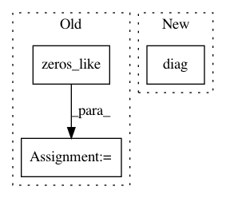

dc39188e6611f254dfb9ef0358570efe59704ff5,geomstats/spd_matrices_space.py,SPDMatricesSpace,sqrtm,#SPDMatricesSpace#Any#,152
Before Change
// sqrt_mat = np.einsum("ijk,ikl,ilm->ijm",
// vectors, diag, vectors)
sqrt_mat = np.zeros_like(sym_mat)
for i in range(sqrt_mat.shape[0]):
sqrt_mat[i] = scipy.linalg.sqrtm(sym_mat[i])
sqrt_mat = vectorization.to_ndarray(sqrt_mat, to_ndim=3)
return sqrt_mat
def random_uniform(self, n_samples=1):
After Change
[eigenvalues, vectors] = np.linalg.eigh(sym_mat)
sqrt_eigenvalues = np.sqrt(eigenvalues)
diag = np.diag(np.squeeze(sqrt_eigenvalues, axis=0))
diag = vectorization.to_ndarray(diag, to_ndim=3)
sqrt_mat = np.einsum("ijk,ikl,iml->ijm",
vectors, diag, vectors)
In pattern: SUPERPATTERN
Frequency: 3
Non-data size: 3
Instances
Project Name: geomstats/geomstats
Commit Name: dc39188e6611f254dfb9ef0358570efe59704ff5
Time: 2018-05-03
Author: ninamio78@gmail.com
File Name: geomstats/spd_matrices_space.py
Class Name: SPDMatricesSpace
Method Name: sqrtm
Project Name: scipy/scipy
Commit Name: 41a383ea63d10b58974756bba8101ea6a65284e0
Time: 2013-06-20
Author: argriffi@ncsu.edu
File Name: scipy/linalg/_matfuncs_sqrtm.py
Class Name:
Method Name: _sqrtm_triu
Project Name: stellargraph/stellargraph
Commit Name: 789d65f38f0949a3f03f61908a207cb558746769
Time: 2019-12-19
Author: andrew.docherty@data61.csiro.au
File Name: stellargraph/layer/preprocessing_layer.py
Class Name: GraphPreProcessingLayer
Method Name: call